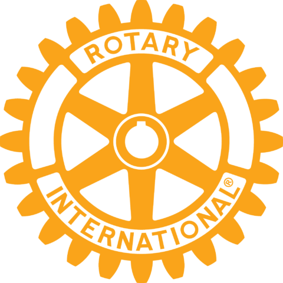
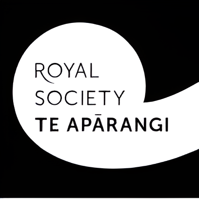

Introduction
Are you interested in working on a personal project this year? Want to use the science labs or tech resources on your own inquiry? At the end of the year you will then be eligible to enter the Various Science and Technology competitions. Come to P12 Week B to get advice and start to link up with teachers who can help you.
NIWA Science Fair

Rotary Science and Tech Forum
14 day camp exploring tertiary-level science, mathematics and technology. Apply as a year 12 student.

Powering Potential
A camp in Wellington for young scientists and technologists in December.